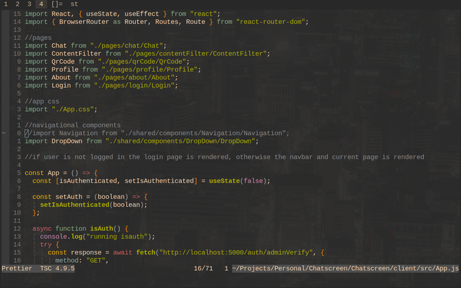
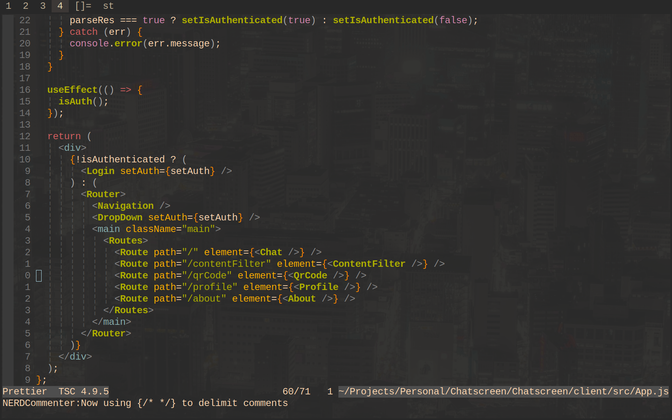
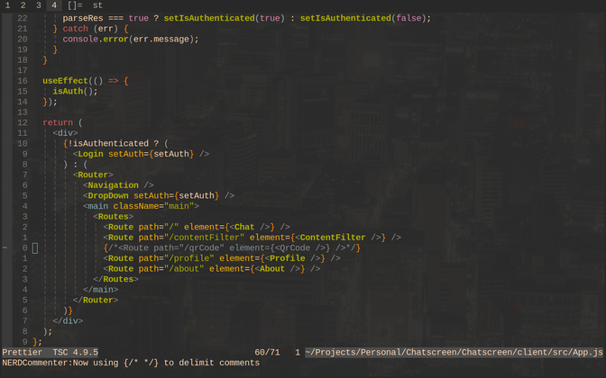
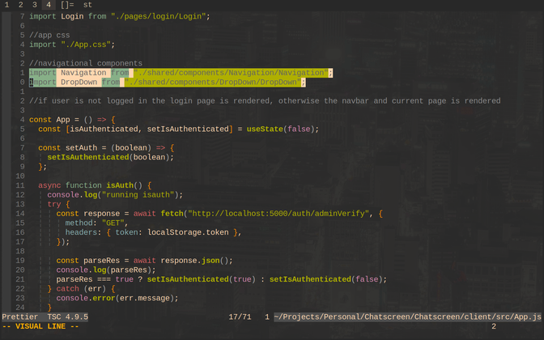
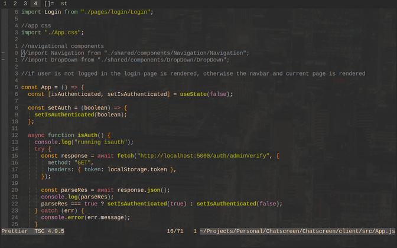

<
NERD COMMENTER:
Made by preservim
Watch Video
Comment / Uncomment a line - hold 'SHIFT' and press
'+' twice

Toggle JSX mode - press ',' then 'c' then 'a'

Commenting in JSX mode is the same process as normal mode
( hold 'SHIFT' and press '+' twice )

Comment multiple lines - commenting multiple lines is achievable by
highlighting the lines you want to comment out, then hold
'SHIFT' and press '+' twice, as usual


<